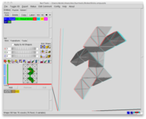
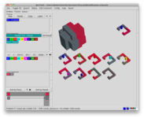
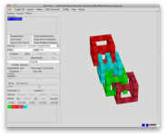
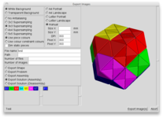
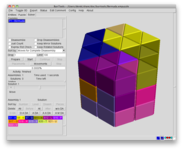
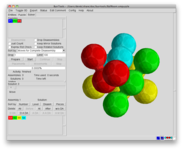
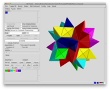
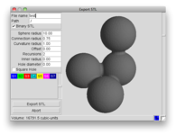
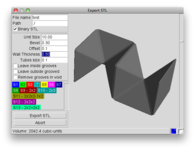

Burr Tools
This (set of) program(s) will help you solve a certain kind of puzzle. Namely puzzles that are made out "glued" together basic units. As basic units the program currently supports: square or dice shaped units, spheres, prisms with an equilateral triangle as base or 2 grids that use tetrahedra.
The problem of the puzzle must be to assemble them into a certain shape. An additional constraint says that the pieces within the result shape must again aligned relative to the grid of the basic unit.
To whet your appetite here are some screenshots that show off all the important features of the program. If you click the images a normal sized version of the window will be loaded.
| 
This image shows the window in shape editing mode editing one of the pieces of the example puzzle "Broken Sticks". It uses the anaglyph mode for red-cyan/blue glasses |

This image displays the window in problem editing mode. It shows the Puzzle "Draculas Dental Desaster" designed by Ronald Kint Bruynseels which is included as an example |
| 
This image shows the window in solution mode. It shows "More MazeN Cube" by Derek Bosch" |

This image contains the image export window one of "Interlocking Puzzle"s truncated octahedrons, a puzzle using the tetra-octa grid. |
| 
This image shows the example puzzle with the triangle grid: "Bermuda" designed by Bill Cutler |

And one example with the sphere grid: "Ball Room" by Stewart Coffin |
| 
Finally an example with the rhombic grid. Again a puzzle designed by Stewart Coffin: "Permutated Third Stellation" |

This shows the stl export window for a sphere piece. You can see the rounded connections between spheres |
| 
And of course you can also export the shapes of all other space grids. This is a piece of the example puzzle "Pieces of Eight" designed by Stewart Coffin |
{kind=link}
{kind=link}
{kind=link}
{kind=link}
{kind=link}
{kind=link}
{kind=link}
{kind=link}
{kind=link}
There are also 2 videos available that show how a puzzle is entered and solved using BurrTools. The puzzle that is used can be found here. The video is divided into 2 parts. Part 1 contains the creation of the shapes and solves the puzzle the first time. Part 2 adds colours to the shapes to make the puzzle complete and the solution unique. The files are 2 and 1.5MBytes big.
You can also find a tutorial made by Lee Krasnow that explains the Rhombic Grid.
So what are the features
- Does nearly all that PuzzleSolver 3D which is
- You can enter all puzzles that are assembled out of dice shaped units
- Find assemblies for you puzzle
- Disassemble the found assemblies
- Show everything in a 3 dimensional image
- Animate how the puzzle has to be assembled
- Toggle the visibility of pieces in the solution to have a look at the inner workings of a puzzle. This is especially helpful for box packing puzzles
- Runs on Windows, OSX, Linux, FreeBSD and probably other Unix variants as well.
- Has several different grids (Cubes, Triangles, Spheres, Rhombics)
- You can specify which cubes to fill and which can be empty or full. PuzzleSolver 3D has only 2 modes. Either all cubes may be left empty in the solution, or the cubes that have an empty neighbour must be filled. BurrTools are more flexible here.
- More than one problem in one file (e.g. have several Soma Cube problems in the same file)
- Constraints to piece placements (like checkerboard)
- Group pieces together to tell the disassembler that they don't need to be taken apart. This is necessary for puzzles like "Cube In Cage" where the cage can not be taken apart but has 3 movable pieces
- No limits (or at least very high limits) to sizes and number of shapes. As long as your computer has the memory and you the patience the program will do it for you, even if it takes aeons.
- Create images that contain the pieces, or an instruction how to assemble the puzzle, or create vector images for further processing
- Create files suitable for STL aware hard and software (e.g. 3D printer)
- Free as in beer. It doesn't cost you anything
- Free as in speech. The source is available, so you can do your own programming or help me writing this software or even continue improving the program in case I have to stop working on it.
- Save puzzles with solutions in compressed XML-files. This allows you to create puzzles with other means (like your own burrgrower, ...)
- A library is provided that helps you to write your own software for puzzle design and analysis
{kind=link}
I've been asked many times why I don't sell the program. For those that are interested here I put up a small text explaining it.
Documentation
To learn more about BurrTools you can read an online version of the user guide and the library documentation. The user guide documentation is also available as a PDF below in the download section and as help inside the program.
The library documentation explains the library interface and can be generated from the source code of the library using doxygen. This documentation is mainly for people wanting to use the library and only of limited use for those who only want to use the GUI part of BurrTools.
Both documents are always for the latest release and will be updated with each release.
Click here for the user guide and here for the library documentation.
News
| News | |
| 09.05.2013 |
BurrTools 0.6.3 has been released this is a bugfix release. Two bugs have been fixed
|
| 23.07.2011 |
BurrTools 0.6.2 has been released this is a bugfix release. Two bugs have been fixed
|
| 12.02.2011 |
BurrTools 0.6.1 has been released this is mainly a bugfix release fixing 2 nasty bugs:
|
| 10.10.2010 |
I want to use this nice date to announce that version 0.6.0 has been released. This version has the following new features:
This version also fixes a few problems:
I want to thank Derek Bosch for his help in this release. Although we had to start over twice he managed in the end to come up with the bevel and offset code required for the STL export. |
| 22.10.2009 |
Version 0.5.2 has been released. This version is another bug-fix release. But it also contains 2 small but nice new features:
|
| 29.4.2009 |
Version 0.5.1 has been released. This version is a bug-fix release. It fixes 4 problems, some of them rather important, so please update.
|
| 5.4.2009 |
Version 0.5.0 has been released. This is a major new release with a ton of new features But before we start with the features I want to mention an important bug-fix. Joe Becker found this one. When you use piece ranges and assigned different ranges to the 2 pieces of a mirror pair of pieces versions prior to this may loose solutions, so I really urge you to update. But now finally let's start with the features. Again BurrTools learned a new grid. The new grid is based on tetrahedra and octahedrons. With this grid you can analyse the tetrahedra-puzzles form Interlocking Puzzles. I want to thank Wayne Daniel who provided me with 2 example puzzles to test the new functionality. Another great new feature is a disassembler for the triangle grid. You can not analyse disassembly sequences for those puzzles. Be aware though that coordinated motion moves are not supported by now. Also the printable manual has returned and it is better than ever. BurrTools still contains the on-line help but if you want a proper manual you can download that manual formatted for A4 or letter paper format. The size of the manual has also reached more than 100 pages. It covers all the features of BurrTools and contains a lot of hints and usage examples to make life easier. BurrTools now contains some features that can be used for piece generation. It has become very easy to create all shapes that fulfil a certain property. It will probably not help in all situations but many tedious manual tasks can be simplified a lot. For that tasks I also speed up the status window calculations by a huge amount. While we are talking about speed up. I replaced the sorting algorithm that sorted solutions by a usable method. If you had more than a few solutions the old algorithm was way too slow. I also replaced the whole save and load code. The file format stayed the same but internally everything has changed. The new code is much much faster. It also requires much less memory. This can be important for big puzzles. The old code might fail to save an analysis because it ran out of memory. This will no longer happen. I also optimized the disassembler to require less memory. It is now possible to analyse disassembly of puzzles with many more internal states. I also removed that stupid 256 piece limitation for the disassembler, so you can now analyse puzzles with lots and lots of shapes. Besides these bigger improvements there are a lot of smaller things
One final remark. I will no longer support the windows installer. I can not test that part of BurrTools on my computer. Lately I found out that there has been a bug in the installer that has been there for a very long time and no one cared to tell me. As I don't like to give out faulty software I will no longer support that feature. You will have to live with the ZIP-archive. I can look into the ZIP file and check everything is all right. |
|
Older news can be found here |
|
Download
| Latest versions | |
| Source (for all systems, as long as you get it compiled) | |
| Windows Binary (in zip archieve) | |
| OSX Binary (64-bit, Mac OS X 10.7+) | |
| BurrTools user guide formatted for A4 paper size | |
| BurrTools user guide formatted for letter paper size | |
Contact
You can make bug reports and feature requests on the project page. There is also a mailing list to be found there where things can be discussed publicly. If you want to mail to this list use the following adress:
burrtools-discussion@lists.sourceforge.net
You have to subscribe to this list if you want to mail to it. Sorry for the inconvenience but there were too many spam mails.
To subscribe to the list or read the archives use the lists web page.
If you want to contact me personally mail to my sourceforge adress: roever at users dot sourceforge dot net
Development
If you want to contribute changes, improvements, fixes or whatever I suggest you get yourself the darcs revision control system. I use that system for the development.
The repositories are available at http://burrtools.sf.net/repos. Currently there are three branches there
| Branches | |
| head | This is the main development branch. It contains all releases (except 0.1.9), it is a darcs 2 repository |
| stable-0.4 | This is the end state of the darcs 1 repository the last release with it is 0.4.2 |
| stable-0.1.9 | This branch contains the 0.1.9 release. |
The repositories are read only, so if you want to send me your changes you have to use the send feature of darcs. I will then apply the changes you made. The repository will be updated by me on a daily basis, when development goes on.
Credits
My special thanks goes to the following people for continuing support or other help
|
André van Kammen. His program (old link, no longer acitve...) has been a great inspiration. It has been the base for the GUI of BurrTools | |
|
Donald E. Knuth. His dancing link algorithm is one base part of the program. Although it has now become modified by ideas from Wei-Hwa Huang | |
|
Bill Cutler: His texts helped implementing the 2nd part of the core algorithm. And he also contributed other ideas. | |
|
Ronald Kint-Bruynseels: He is always a big source of ideas, he is beta tester, documentation writer GUI designer and usability improver, icon painter and what not all else. Without him BurrTools would not be what it is now. | |
|
Derek Bosch: mainly responsible for the OSX port. But he also contributes the odd code snippet or even new feature here and there. | |
|
|
Sourceforge provides the discspace for this webpage. |